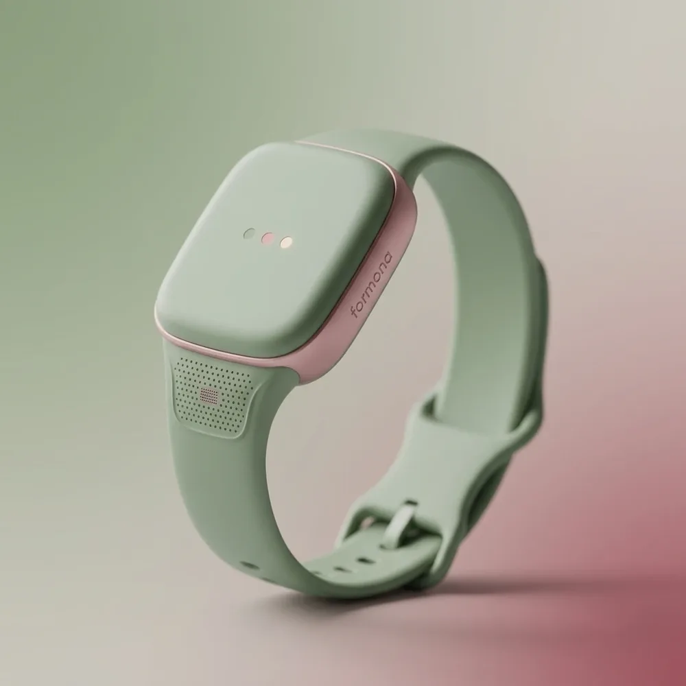
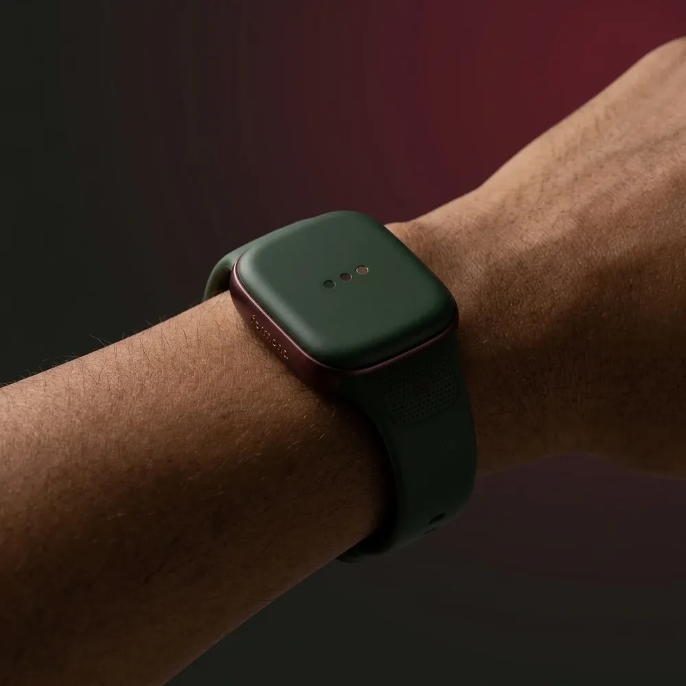
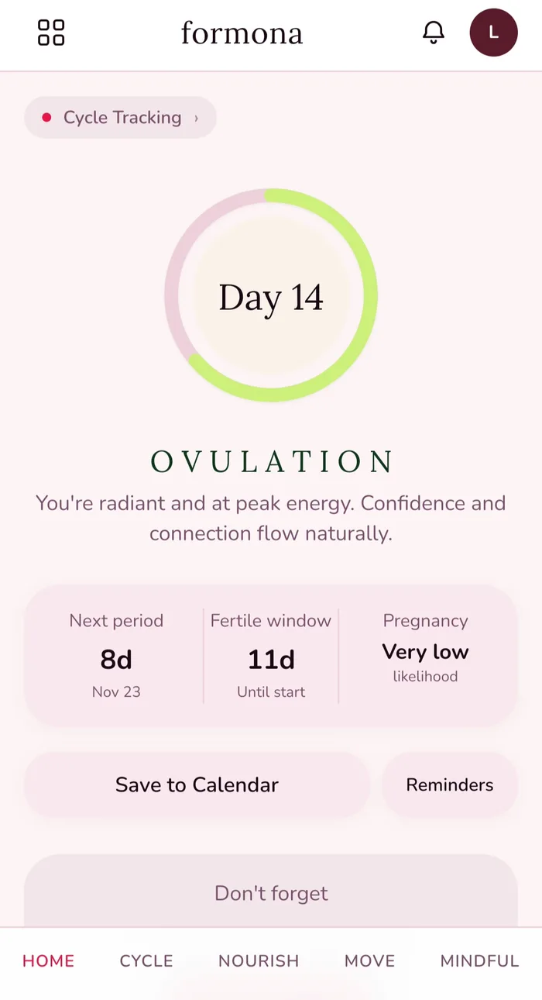
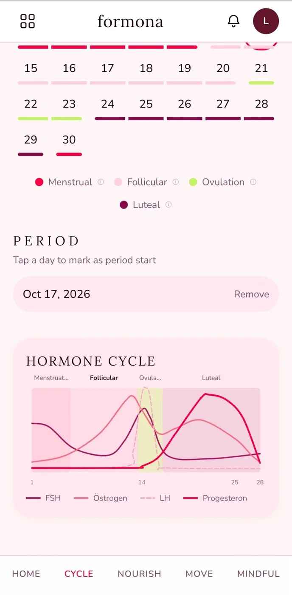
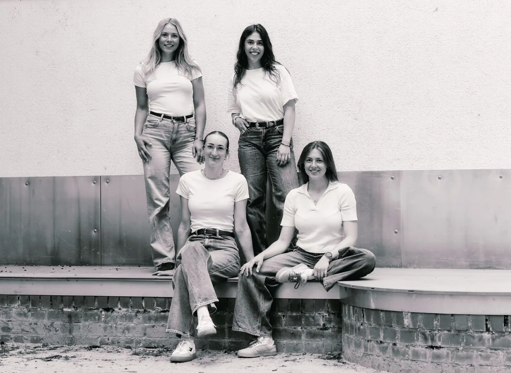

Read your body. Own your health.
formona measures what your body is telling you, continuously and without needles, and turns it into guidance for every phase of your life.
Discover formona
Why formona
Your hormones change every day. A single blood test only sees one frame of that movie, and on the wrong day it misses what matters.
Schematic hormone levels across one cycle
The problem
median time to an endometriosis diagnosis in Germany and Austria [2]
of endometriosis patients get at least one false diagnosis on the way [2]
of women with PMOS see three or more professionals before diagnosis [11]
more of their lives do women spend in poor health than men [4]
[2] Hudelist et al. 2012, Human Reproduction · [4] WEF & McKinsey Health Institute 2024 · [11] Gibson-Helm et al. 2017, JCEM
What women tell us
have mood swings, poor sleep or low energy without explanation
rarely or never feel taken seriously with hormonal symptoms
want real-time hormone data for themselves
would share their hormone data anonymously for research
[1] formona community survey on hormonal health, n = 196 women, May 2026
Your hormones don't stand still, so neither should your data.
Continuous, holistic hormone insights for every life phase.
The wearable
Our own wearable measures vital signs and, as our core innovation, hormones directly in sweat. Continuously, day and night, without a single needle.

A soft band with vital sensors for heart rate, HRV, skin temperature and stress response.
A tiny sensor in the band measures hormones in sweat, starting with the stress hormone cortisol.
The app turns your data into plain-language insights and doctor-ready reports.
Product vision; the hormone sensor is in development.
The app
Your hormonal and physiological curves in one place, explained in plain language.
Track symptoms by simply speaking to the app.
Nutrition, training, sleep and mental health, tailored to your phase.
Structured reports that summarise weeks and months, not just one day.
Transparent, GDPR-compliant consent. Sharing for research only if you want to.


Why hormones
Temperature and heart rate show that something changed, but not which hormone changed, by how much, or why. Direct hormone values turn estimates into measurements.
Temperature, heart rate and HRV also react to illness, alcohol, training and stress.
The temperature rise confirms ovulation only in retrospect, when the fertile window is closing.
Irregular cycles, PMOS, perimenopause and hormonal contraception break the pattern.
No vital sign tells how high cortisol, testosterone, estradiol or progesterone actually is.
For every phase
One wearable that follows your hormones continuously, with insights that change as your life does.
Cycle
Know when and why your energy, mood and sleep change.
Contraception
See how your body responds to hormonal contraception.
Fertility
Understand ovulation and cycle irregularities.
Pregnancy
Feel safe and understood through every trimester.
Menopause
Anticipate hot flushes and track how therapy works for you.
PMOS
Hormone and cycle data your specialist can work with.
Built by women,
for women.
Four founders from medicine, chemistry, engineering and AI, and management: together we cover every link, from the molecule on the sensor to the woman in the doctor's office.
Team

Management · Business & Strategy
M.Sc. Management & Technology, TUM; Porsche Consulting; former chair of BDSU
Medicine · Clinical Lead
Medical student, TUM; 5+ years as an EMT; clinical exposure in Ghana and acute psychiatry
Chemistry · Chemistry Lead
M.Sc. Chemistry, TUM; polymer chemistry at Roche; GDCh Chemistry Prize
Engineering & AI · Technical Lead
M.Sc. Robotics, Cognition, Intelligence, TUM; Konrad-Adenauer Foundation scholar; Brainlab; B. Braun
Supported by
Hormone, fertility and endometriosis specialists, and sensor scientists support us on our way.
Hormone and Fertility Center
Letter of supportInterdisciplinary Endometriosis Center
Letter of supportChair of Sensor Technology
Lab and researchJoin us
We are looking for women for our beta community, clinical partners for our pilot studies and funding partners for our sensor track.
lea.steinlehner@tum.de